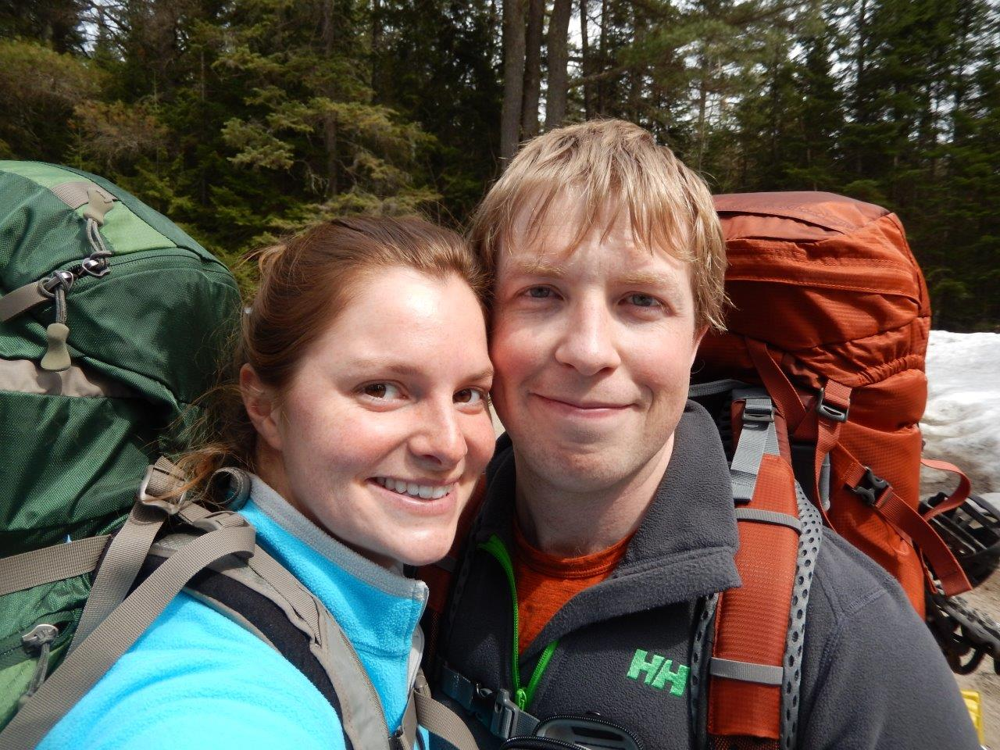
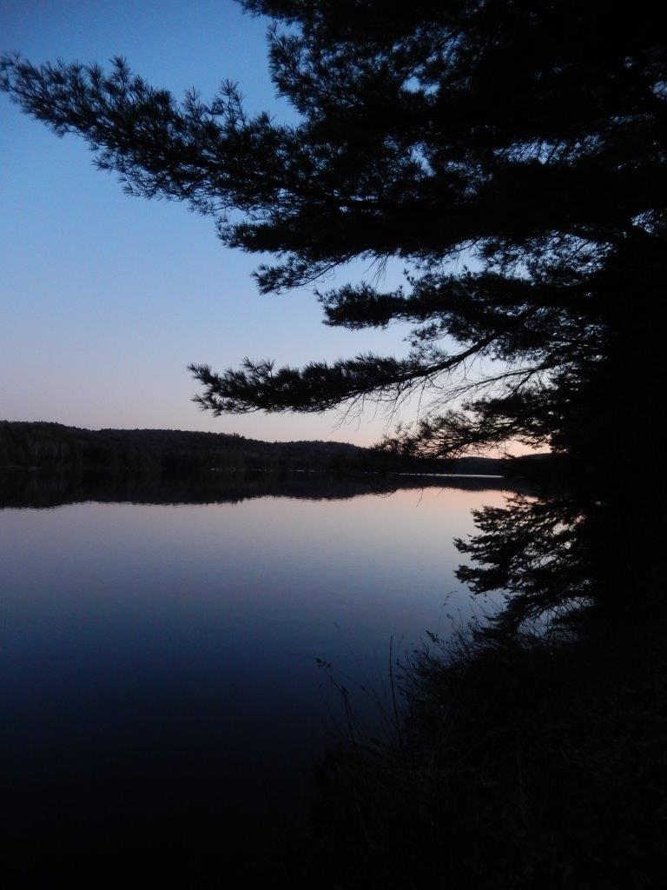
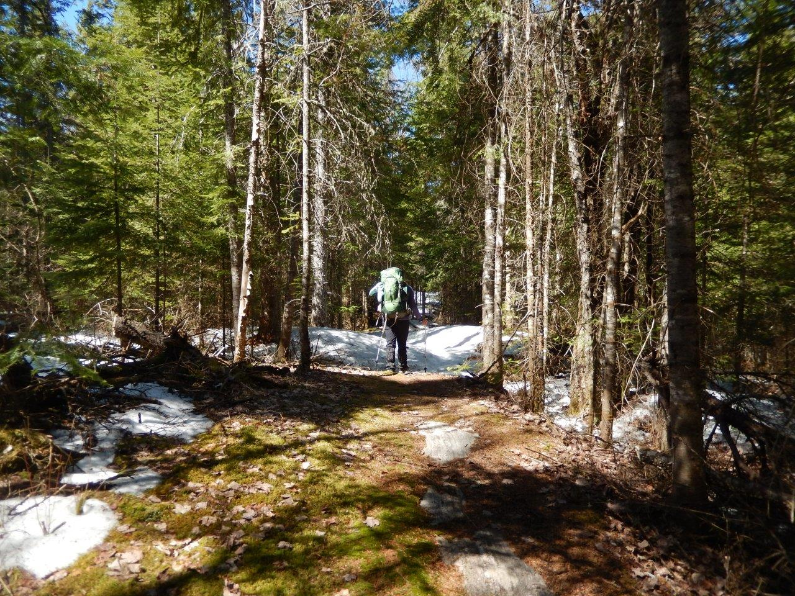
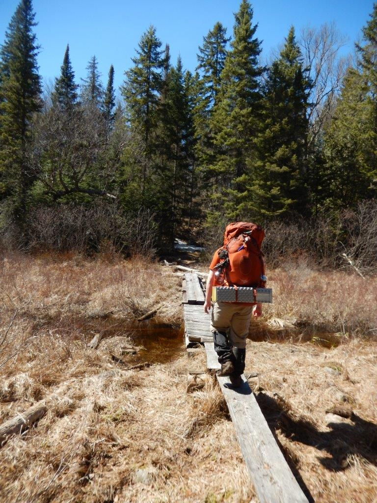

|
2016 April 29-May 1, 2 night full loop of Algonquin Highlands trail. Technically at this point in time the park still wasn't open for reservatiosn due to the late spring, however we had our reservations for a while. Called the park to see if our reservations had been cancelled and apparently they had not, so we went. |
 |
We still were living apart at this point (Dave-Deep River, Katie-Hamilton), so we met at the trailhead mid-afternoon to start our hike. Katie brought me a cookie from Detour cafe in Dundas and I was super excited. You can see a good amount of snow in the parking lot in the background. |
|
First morning on Provoking Lake. We made the mistake the night before of not just grabbing the first site we came across, we ended up hiking an extra 2-3 km just to discover the other sites were taken. All in all this was a really nice site, just that the trail goes throught through the middle. |
 |
Early morning on Provoking Lake. |
 |
Snowy trails on/off the entire hike. We brought our snowshoes in the car but decided based on the view from the parking lot not to bring them. Definatey some slippery spots on the snow/ice and fell through in a few locations. We were very happy to have our hiking poles. |
|
Our site on Harness Lake. We learned our lesson from the previous night and took the first site we found. We were pretty tired after the full day of hiking so we dipped our sore feet in the lake, but you could only last for a minute or two as the water was still ice cold. |
 |
The trail was in good condition and well maintained, we enjoyed this hike much more than the attempts we had on the Western Uplands. On previous trips we day-hiked the small loop (18km) so it was nice to finish out the full loop (~35km). I'm sure we'll do this hike again, maybe with a little less snow next time. |